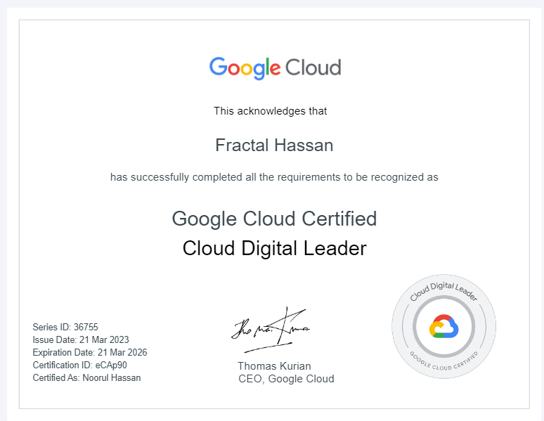

v1.0.0 Early Development Alpha Build
First thing, I am officially GCP-CDL certified!
And I am working on my Cloud Engineer and Cloud Architect certs. I am certified to solution cloud solutions for large scale applications such as these. My preferred cloud is Google Cloud Platform, but similar services exist across all Cloud Service Providers.
This website you see here is currently running in a node.js docker container, and is being provisioned by GKE Autopilot as a single pod instance. It is highly scalable and accepts the exact amount of traffic as is necessary, never provisioning too much or too little resources, so that one can spend only the money they absolutely need to.
Ideally this app would run as a Kubernetes cluster with one's preferred frontend and backend writing to BigTable or BigQuery, with Secrets Manager API managing the API key resources. The provisioning of the Kubernetes Cluster would allow for an app that scales and shrinks depending on the demand, and provides a self-healing modular infrastructure that would allow for minimal downtime possible.
Agile Infrastructure allows for the rapid scalability and editability of an app. This entire website and the unused application components was entirely built cloud native, which can be integrated into CI/CD pipelines to ensure minimal downtime and continuous deployment of new components. Agile infrastrucure allows one to rapidly scale, change, twist, replace, and reproduce portions of your application in order to ensure minimal downtime of your app during the development process, while using only what resources that is needed. The elasticity of one's app is crucial for an app with workloads that can change dramatically throughout the day and year. GKE would be a solid choice for deploying the core of this app, with potential future PaaS offerings driving application integration within the site.
With many built in security features such as IAM, using the Zero Trust Model this application can be built with incredibly high security in mind, with least permissions given to all users, both webusers and developers. With robust cybersecurity and a high uptime SLA, we can ensure this app stays online and secure as possible.
Cloud native apps built greenfield (i.e. from within the cloud from the start) make it incredibly easy to deploy your app worldwide, allowing for users across the globe to get very efficient and rapid connection to the app, by simply provisioning resources in a region or zone where you would like to deploy the app.